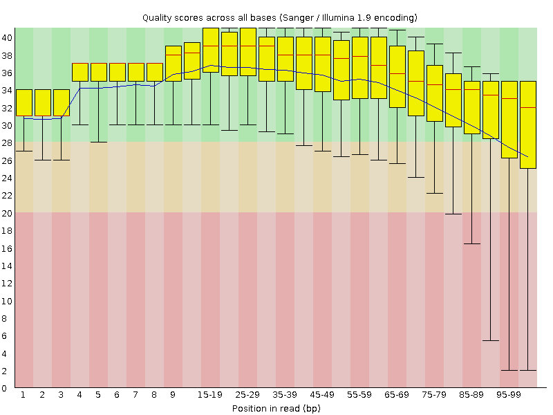
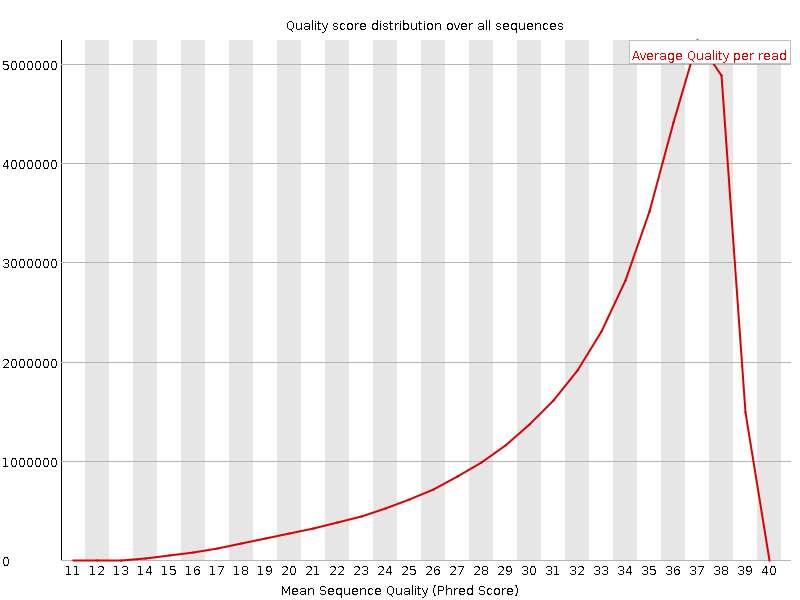
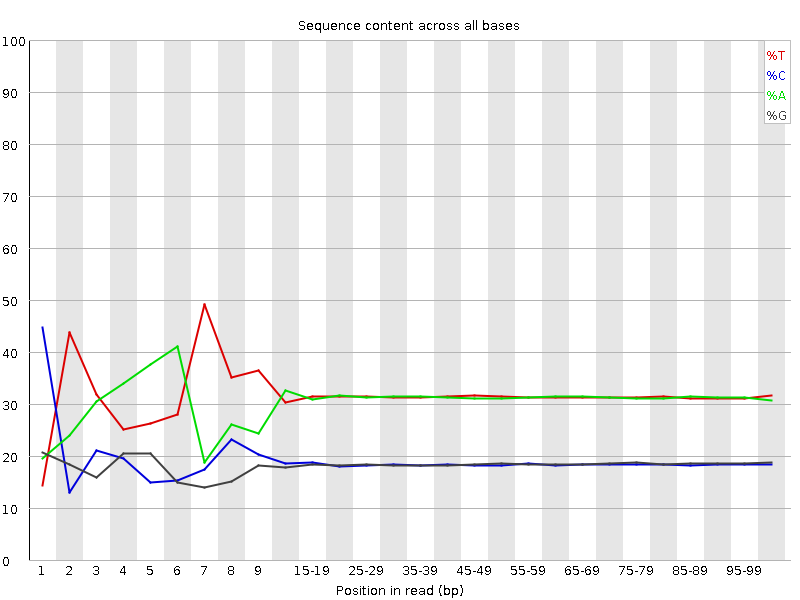
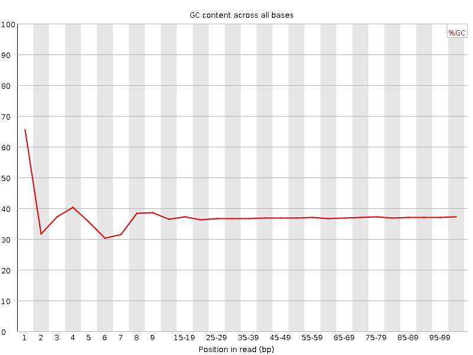
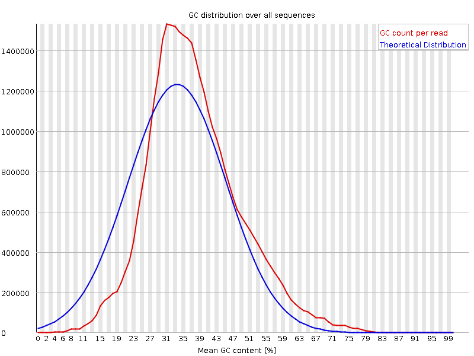
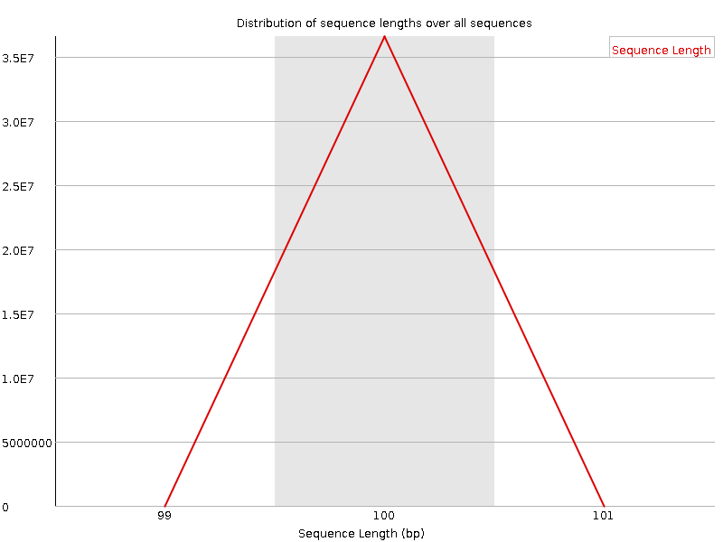
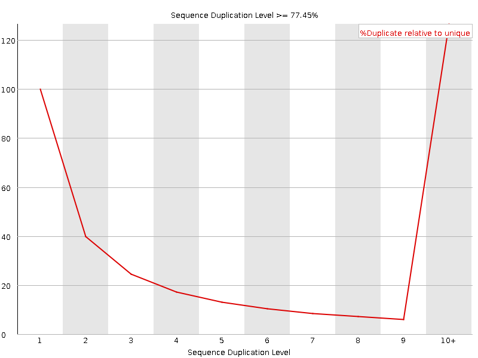
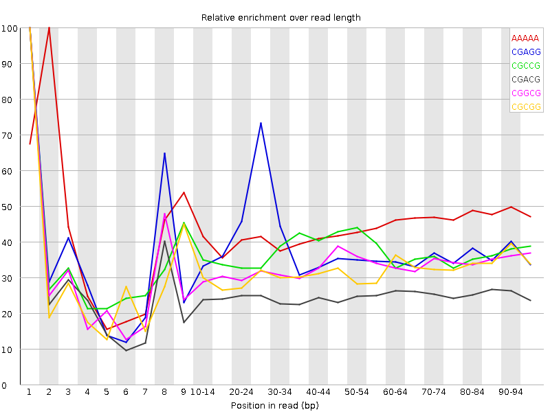

![[OK]](Icons/tick.png) Basic Statistics
Basic Statistics
| Measure | Value |
|---|---|
| Filename | t2_2.fq |
| File type | Conventional base calls |
| Encoding | Sanger / Illumina 1.9 |
| Total Sequences | 36595658 |
| Filtered Sequences | 0 |
| Sequence length | 100 |
| %GC | 37 |
Per base sequence quality

Per sequence quality scores

![[FAIL]](Icons/error.png) Per base sequence content
Per base sequence content

Per base GC content

![[WARN]](Icons/warning.png) Per sequence GC content
Per sequence GC content

Per base N content

Sequence Length Distribution

Sequence Duplication Levels

Overrepresented sequences
| Sequence | Count | Percentage | Possible Source |
|---|---|---|---|
| CTAATTTTCATCTTAATTCAACATCGAGGTCGCAAACATCTTTATCTATA | 103009 | 0.2814787481072208 | No Hit |
| CTTTCGTACAATTAATTAATATTTTATTATAGATAGAAACCAATCTGACT | 84928 | 0.2320712473594545 | No Hit |
Kmer Content

| Sequence | Count | Obs/Exp Overall | Obs/Exp Max | Max Obs/Exp Position |
|---|---|---|---|---|
| AAAAA | 24177070 | 2.3040352 | 5.2896895 | 2 |
| CGAGG | 2795340 | 2.1596954 | 5.644204 | 1 |
| CGCCG | 1646480 | 2.087948 | 5.6356473 | 1 |
| CGACG | 2616295 | 1.9896659 | 7.8723097 | 1 |
| CGGCG | 1453960 | 1.8731825 | 5.645834 | 1 |
| CGCGG | 1407105 | 1.8128177 | 5.6912293 | 1 |
| TCGAG | 3963445 | 1.7924778 | 5.1023192 | 7 |
| CTTCT | 6847395 | 1.7693844 | 5.7343073 | 1 |
| CTCGA | 3859810 | 1.7182344 | 9.136983 | 1 |
| CTGGA | 3702245 | 1.6743495 | 7.377272 | 1 |
| CGCGA | 2131560 | 1.6210299 | 5.80347 | 1 |
| CTTCC | 3626670 | 1.5758591 | 5.5990963 | 1 |
| CTCCA | 3591345 | 1.5736537 | 8.015714 | 1 |
| CGAGA | 3401220 | 1.5511664 | 5.3303123 | 1 |
| CGCCA | 2059760 | 1.5418626 | 5.842537 | 1 |
| CGATC | 3440440 | 1.5315475 | 5.1453757 | 4 |
| ATCGA | 5725560 | 1.5284973 | 5.203749 | 6 |
| CCGGC | 1203135 | 1.5257295 | 5.695633 | 1 |
| CTTTT | 9678795 | 1.487324 | 6.72884 | 1 |
| CTTTC | 5696325 | 1.471945 | 7.9087915 | 1 |
| TCATC | 5518250 | 1.4379405 | 5.447463 | 8 |
| CTCGT | 3229095 | 1.4254584 | 7.6818447 | 1 |
| CTGGC | 1885710 | 1.4220853 | 5.2876077 | 1 |
| CTTCA | 5445475 | 1.4189768 | 6.090887 | 1 |
| CTTCG | 3203365 | 1.4141002 | 6.862352 | 1 |
| TTTCA | 9097900 | 1.4098347 | 5.0908694 | 6 |
| CTCGC | 1876070 | 1.3926286 | 6.869715 | 1 |
| CGAAG | 3049660 | 1.3908333 | 5.3204064 | 1 |
| CTCGG | 1833920 | 1.3830284 | 8.589904 | 1 |
| CTCCT | 3161950 | 1.373929 | 5.7721276 | 1 |
| CTTGG | 2718260 | 1.2190715 | 6.075704 | 1 |
| CTTTG | 4599060 | 1.207342 | 6.3422756 | 1 |
| CGAAA | 4447210 | 1.1972286 | 5.064906 | 1 |
| CTTGA | 4308700 | 1.1406443 | 5.3481474 | 1 |
| CTCCG | 1396605 | 1.0367161 | 5.4698315 | 1 |
| CGTAC | 1808320 | 0.80499244 | 5.0105987 | 5 |